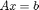
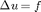

A tutorial for new MueMat users
In this example, we show how to use MueMat to solve the linear system  arising from the two-dimensional Laplace's equation, , discretized on a square mesh with homogeneous Dirichlet boundary conditions.
The linear system will be solved several times, each time with increasing levels of detail.
Contents
- Preliminary remark
- Example header
- Example 1: Minimimal information multigrid setup/solve:
- Example 2: Understanding Iterate(rhs,Nits, guess, InitGuessStatus, Cycle, k)
- Example 3: Understanding SetSmoothers(Smfact, startLevel,numDesiredLevels, CrossFactory)
- Example 4: Understanding FillHierarchy(PRfact, Acfact, startLevel, numDesiredLevels, CrossFactory)
Preliminary remark
MATLAB support two kinds of classes: handle classes and value classes. MueMat uses handle classes.
Use of handle classes are natural if you are familiar with the concept of references and the oriented object support of other programming languages like C++ but please note that it contrasts with the rest of the Matlab language which is consistently pass-by-value.
When you instantiate an handle class, the constructor returns a reference to the object created. When you assign this reference to another variable or pass it to a function, there is no copy of the original object and you still access to the initial data. In addition, a function that modifies the object does not need to return it.
Example:
MgHierarchy = Hierarchy(); % Creation of an Hierarchy. MgHierarchy2 = MgHierarchy; % MgHierarchy2 is not a copy of MgHierarchy. It is just another name for accessing to the same data. MgHierarchy.SetOutputLevel(1); % This method call also modifies MgHierarchy2.
Most of MueMat classes implement a copy constructor and a Copy() method.
Example:
MgHierarchy2 = Hierarchy(MgHierarchy); % MgHierarchy2 is a copy of MgHierarchy. MgHierarchy3 = MgHierarchy.Copy(); % MgHierarchy3 is a copy of MgHierarchy.
See also 'Comparing Handle and Value Classes' in the MATLAB documentation for more details about handle classes and value classes.
Example header
We first initialize the random number generator to ensure reproducible results. The file mue_include.m defines some useful constants.
srand;
clear all;
mue_include;
Example 1: Minimimal information multigrid setup/solve:
- Build the fine level matrix.
- Allocate a smoothed aggregation data bucket and associate it with the fine level matrix.
- Allocate the multigrid hierarchy and associate the smoothed aggregation data bucket created in the previous step with the finest level.
- Populate the multigrid hierarchy using a smoothed aggregation factory.
- Set the default smoothers.
- Invoke the multilevel scheme either as solver or preconditioner.
Note: At this point MgHierarchy.Iterate() does a fixed number of iterations. That is, there is no way to set a tolerance and iterate until the tolerance is met. It is recommended that Iterate() be used as a preconditioner.
Amat = BuildLaplace2D(30); % Build the fine level matrix. Finest = SaLevel(); % Allocate a smoothed aggregation data bucket. Finest.SetA(Amat); % Associate the fine level matrix with the data bucket. MgHierarchy = Hierarchy(); % Allocate the multigrid hierarchy MgHierarchy.SetOutputLevel(1); % Verbose MgHierarchy.SetBucket(Finest,1); % Associate the data bucket with the finest level. MgHierarchy.FillHierarchy(GenericPRFactory(SaPFactory())); % Populate the hierarchy using a smoothed aggregation factory. MgHierarchy.SetSmoothers(); % Set the default smoothers. n = Amat.GetRowMap().NDOFs(); rhs = rand(n,1); guess = zeros(n,1); CGtol = 100.*eps(2); CGits = 99; sol = MgHierarchy.Iterate(rhs, 9, guess, ALLZEROS); % Use multigrid as a solver. [sol,flag,relres,iter,resvec]= pcg(Amat.GetMatrixData(),rhs,CGtol,CGits,... % Use multigrid as a preconditioner. @(rhs)MgHierarchy.Iterate(rhs,1, zeros(n,1), ALLZEROS));
***************************************************************************** Building 900 x 900 scalar matrix Hierarchy: start level = 1 Hierarchy: maximum #levels = 10 Aggregating 1 ......... condest(P'P) = 4.85e+00 condest(P'AP) = 7.17e+01 Aggregating 1 . condest(P'P) = 1.56e+01 condest(P'AP) = 6.52e+00 Hierarchy: start level = 1 Hierarchy: maximum #levels = 3 (level 1) GaussSeidel: sweeps=1, omega=1, symmetric mode (level 2) GaussSeidel: sweeps=1, omega=1, symmetric mode 1: ||r||=1.366086e+01 2: ||r||=2.560938e+00 3: ||r||=6.255989e-01 4: ||r||=1.601384e-01 5: ||r||=4.101776e-02 6: ||r||=1.042562e-02 7: ||r||=2.631943e-03 8: ||r||=6.613157e-04 9: ||r||=1.656669e-04 1: ||r||=1.366086e+01 1: ||r||=2.258808e+00 1: ||r||=2.165842e-01 1: ||r||=1.207632e-02 1: ||r||=7.934620e-04 1: ||r||=5.909319e-05 1: ||r||=3.546142e-06 1: ||r||=1.999570e-07 1: ||r||=1.006838e-08 1: ||r||=4.746662e-10 1: ||r||=2.126545e-11 1: ||r||=9.773074e-13
Example 2: Understanding Iterate(rhs,Nits, guess, InitGuessStatus, Cycle, k)
Optional arguments include
- InitGuessStatus ALLZEROS or NOTALLZEROS indicates whether the guess is all zeros or not. Some computations are skipped when ALLZEROS. Default: NOTALLZEROS.
- Cycle 1 ==> Vcycle, 2 ==> Wcycle. Default: Vcycle.
- k Iteration cycle starts on k th level. Normally, k = 1 is the finest level. Default: 1.
fprintf('\nSame solve as before but less efficient as initial guess is not\n'); fprintf('assumed to be the zero vector.\n'); sol = MgHierarchy.Iterate(rhs, 9, guess, NOTALLZEROS); fprintf('\nWcycle solve\n'); sol = MgHierarchy.Iterate(rhs, 9, guess, ALLZEROS,2); fprintf('\nNo output Vcycle solve\n'); sol = MgHierarchy.Iterate(rhs, 9, guess, ALLZEROS,1);
Same solve as before but less efficient as initial guess is not assumed to be the zero vector. 1: ||r||=1.366086e+01 2: ||r||=2.560938e+00 3: ||r||=6.255989e-01 4: ||r||=1.601384e-01 5: ||r||=4.101776e-02 6: ||r||=1.042562e-02 7: ||r||=2.631943e-03 8: ||r||=6.613157e-04 9: ||r||=1.656669e-04 Wcycle solve 1: ||r||=1.366086e+01 2: ||r||=1.774063e+00 3: ||r||=2.458806e-01 4: ||r||=3.414411e-02 5: ||r||=4.791968e-03 6: ||r||=6.789232e-04 7: ||r||=9.687591e-05 8: ||r||=1.389482e-05 9: ||r||=2.000387e-06 No output Vcycle solve 1: ||r||=1.366086e+01 2: ||r||=2.560938e+00 3: ||r||=6.255989e-01 4: ||r||=1.601384e-01 5: ||r||=4.101776e-02 6: ||r||=1.042562e-02 7: ||r||=2.631943e-03 8: ||r||=6.613157e-04 9: ||r||=1.656669e-04
Example 3: Understanding SetSmoothers(Smfact, startLevel,numDesiredLevels, CrossFactory)
All arguments are optional.
Smfact Factory specifying smoothers to be built. Right now MueMat has only one smoother factory called BlkSmootherFactory() which itself takes arguments to specify things like Jacobi, GaussSeidel, BlkJacobi, BlkGaussSeidel, and domain decomposition. See example/SmoothingTest.m for a detailed description of BlkSmootherFactory(). Default: BlkSmootherFactory('GaussSeidel', 1, 1), which corresponds to one pre and one post symmetric Gauss-Seidel iteration.
startLevel Default: 1.
numDesiredLevels Default: # of levels in hierarchy. startLevel and numDesiredLevels indicate which levels will have smoothers set. Note: By default Smfact() does not actually populate the last level with a smoother. A direct level solver is used on the coarsest level if no smoother is set. Thus, in reality numDesiredLevels-1 smoothers are set with the default behavior of Smfact. This is a bit confusing but is consistent with FillHierarchy().
CrossFactory Handles any smoother request which involves coordination with a nonsmoother factory. This is passed to Smfact's build method. An example of this might be using a block smoother where blocks are defined by aggregates generated from the prolongator factory. See example/CrossFactorySpecTest.m for a further discussion. Default: []
fprintf('\nV(3,3) cycle using Jacobi with omega= .7 !\n'); NewHierarchy = MgHierarchy.Copy(); % Copy the previously built hierarchy. NewHierarchy.SetSmoothers(SmootherFactory(Smoother('Jacobi', 3, .7))); sol = NewHierarchy.Iterate(rhs, 9, guess, ALLZEROS); fprintf('\nControl of smoothers is described in example/SmoothingTest.m\n'); fprintf('Here is an example corresponding to a pre-forward Gauss-Seidel\n'); fprintf('and post-backward sweep Gauss-Seidel.\n'); NewHierarchy = MgHierarchy.Copy(); % Copy the previously built hierarchy. PreSmoo = Smoother('GaussSeidel', 1, 1); PostSmoo = Smoother(PreSmoo); % Copy PreSmoo.SetForwardSweep(true); PreSmoo.SetBackwardSweep(false); PostSmoo.SetForwardSweep(false); PostSmoo.SetBackwardSweep(true); SFact = SmootherFactory(PreSmoo,PostSmoo); NewHierarchy.SetSmoothers(SFact); sol = NewHierarchy.Iterate(rhs, 9, guess, ALLZEROS); fprintf('\nHere we use the smoother on the coarsest level\n'); NewHierarchy = MgHierarchy.Copy(); % Copy the previously built hierarchy. SFact.SetCoarsest(true); NewHierarchy.SetSmoothers(SFact); sol = NewHierarchy.Iterate(rhs, 9, guess, ALLZEROS); fprintf('\nFinally an example with different smoothers on different levels\n'); NewHierarchy = MgHierarchy.Copy(); % Copy the previously built hierarchy. NewHierarchy.SetSmoothers(SmootherFactory(Smoother('GaussSeidel',1,1)),1,1); NewHierarchy.SetSmoothers(SmootherFactory(Smoother('Jacobi',3, .7)),2,1); sol = NewHierarchy.Iterate(rhs, 9, guess, ALLZEROS);
V(3,3) cycle using Jacobi with omega= .7 ! Hierarchy: start level = 1 Hierarchy: maximum #levels = 3 1: ||r||=1.405505e+01 2: ||r||=3.296062e+00 3: ||r||=1.074516e+00 4: ||r||=3.691413e-01 5: ||r||=1.279081e-01 6: ||r||=4.442844e-02 7: ||r||=1.546553e-02 8: ||r||=5.395071e-03 9: ||r||=1.885476e-03 Control of smoothers is described in example/SmoothingTest.m Here is an example corresponding to a pre-forward Gauss-Seidel and post-backward sweep Gauss-Seidel. Hierarchy: start level = 1 Hierarchy: maximum #levels = 3 1: ||r||=1.432438e+01 2: ||r||=6.373130e+00 3: ||r||=2.238755e+00 4: ||r||=8.096240e-01 5: ||r||=3.091643e-01 6: ||r||=1.221806e-01 7: ||r||=4.914585e-02 8: ||r||=1.994577e-02 9: ||r||=8.134885e-03 Here we use the smoother on the coarsest level Hierarchy: start level = 1 Hierarchy: maximum #levels = 3 1: ||r||=1.432438e+01 2: ||r||=6.338492e+00 3: ||r||=2.875682e+00 4: ||r||=1.262034e+00 5: ||r||=5.550072e-01 6: ||r||=2.450787e-01 7: ||r||=1.083900e-01 8: ||r||=4.792534e-02 9: ||r||=2.116852e-02 Finally an example with different smoothers on different levels Hierarchy: start level = 1 Hierarchy: maximum #levels = 1 Hierarchy: start level = 2 Hierarchy: maximum #levels = 1 1: ||r||=1.366086e+01 2: ||r||=2.887209e+00 3: ||r||=8.789546e-01 4: ||r||=2.814811e-01 5: ||r||=9.022373e-02 6: ||r||=2.882837e-02 7: ||r||=9.198392e-03 8: ||r||=2.934756e-03 9: ||r||=9.367716e-04
Example 4: Understanding FillHierarchy(PRfact, Acfact, startLevel, numDesiredLevels, CrossFactory)
All but the first argument are optional.
PRfact Factory specifying transfer operators to be built.
Acfact Factory specifying coarse discretization matrices to be built. Default: RAPFactory() which just does Petrov-Galerkin projection.
startLevel Default: 1. numDesiredLevels Default: # of levels in hierarchy. startLevel and numDesiredLevels indicate which levels will have operators built.
CrossFactory Handles any request which involves coordination between factories. It also handles all reuse/save requests (as these are sometimes cross factory). See example/CrossFactorySpecTest.m for a further discussion. Default: []
fprintf('Finally, we change a few default options corresponding to\n'); fprintf('a rectangular aggregation algorithm and lowering the \n'); fprintf('smoothed aggregation damping parameter\n'); CoalesceDropFact = CoalesceDropFactory(); AggFact = AggregationFactory(); AggFact.SetAlgorithm('rectangle'); AggPtsPerDim(1) = 6; AggPtsPerDim(2) = 3; AggFact.SetAggPtsPerDim(AggPtsPerDim); AggFact.SetTargetSize(5); PFact = SaPFactory(CoalesceDropFact,AggFact); PFact.SetDampingFactor(1./3); PRFact = GenericPRFactory(PFact); MgHierarchy = Hierarchy(); MgHierarchy.SetOutputLevel(1); MgHierarchy.SetBucket(Finest,1); MgHierarchy.FillHierarchy(GenericPRFactory(PFact)); MgHierarchy.SetSmoothers(); sol = MgHierarchy.Iterate(rhs, 19, guess, ALLZEROS);
Finally, we change a few default options corresponding to a rectangular aggregation algorithm and lowering the smoothed aggregation damping parameter Aggregation Factory Warning: TargetSize will be ignored by this algorithm! Hierarchy: start level = 1 Hierarchy: maximum #levels = 10 condest(P'P) = 1.19e+00 condest(P'AP) = 3.61e+01 Hierarchy: start level = 1 Hierarchy: maximum #levels = 2 (level 1) GaussSeidel: sweeps=1, omega=1, symmetric mode 1: ||r||=1.366086e+01 2: ||r||=9.510379e+00 3: ||r||=6.924427e+00 4: ||r||=4.888656e+00 5: ||r||=3.428152e+00 6: ||r||=2.404656e+00 7: ||r||=1.690263e+00 8: ||r||=1.190915e+00 9: ||r||=8.409197e-01 10: ||r||=5.949051e-01 11: ||r||=4.215313e-01 12: ||r||=2.990756e-01 13: ||r||=2.124201e-01 14: ||r||=1.510020e-01 15: ||r||=1.074148e-01 16: ||r||=7.644947e-02 17: ||r||=5.443252e-02 18: ||r||=3.876772e-02 19: ||r||=2.761673e-02